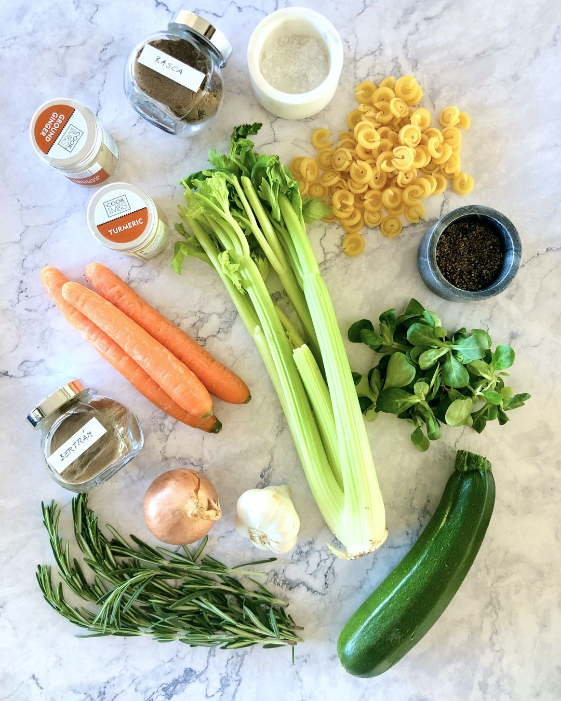

Zimná polievka podľa @veganlady.sk — Normy Jedál
HUSTÁ ZIMNÁ MINESTRONE S MESSICANI
Winter Minestrone with Messicani
Moja minestone je plná úžasnej zimnej zeleniny ovoňanej rozmarínom. Zeleninový vývar som ochutila kurkumou, rascou a zázvorom a tentokrát som použila novinku – korenie bertrám, ktorý podporuje dobré trávenie a znásobuje príjem vitálnych látok do organizmu. Je to taký malý zázrak, ktorý vie postaviť človeka opäť na nohy. Príprava polievky je jednoduchá, najviac sa človek narobí s krájaním zeleniny. Jediné na čo si treba dať pozor, je správny timing pri varení rôznych druhov zeleniny. Preto dávam cuketu úplne nakoniec, stačí jej len pár minút, aby sa nerozvarila na kašu. No a šalát sa nevarí vôbec, ten zmäkne v horúcom vývare okamžite. Šalátu v polievke sa netreba báť, správa sa podobne ako špenát, akurát je nutné vybrať druh s pevnými listami. Mne sa ešte veľmi páčia v minestrone zaujímavé tvary cestovín, preto som dnes použila messicani. Ale kľudne namixuj rôzne zbytky viacerých druhov, budú vyzerať nádherne! Ja už nemám čo dodať… je fantastická!
Recept na mojom blogu: https://veganlady.sk/77…/husta-zimna-minestrone-s-messicani/
#minestrone #winterminestrone #hustazeleninovapolievka #veganskapolievka #zimnapolievka #polievkaakohlavnejedlo #vegan #govegan #eatvegan #veganfood #veganfoodporn #vegansofinstagram #whatveganseat #bezlepkove #glutenfree #bezlaktozove #dairyfree #lactosefree #vegetarian #foodblogger #foodlover #foodphotography #foodstyling #foodphoto